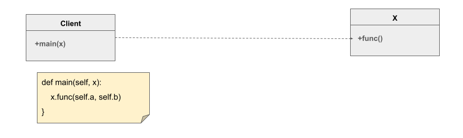
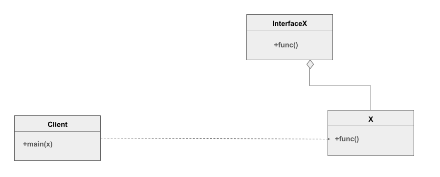
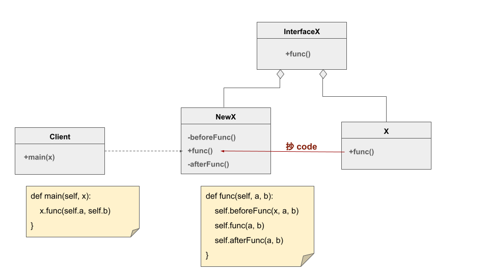
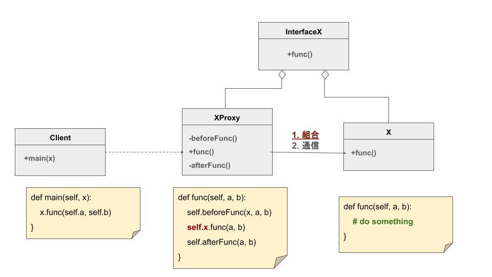
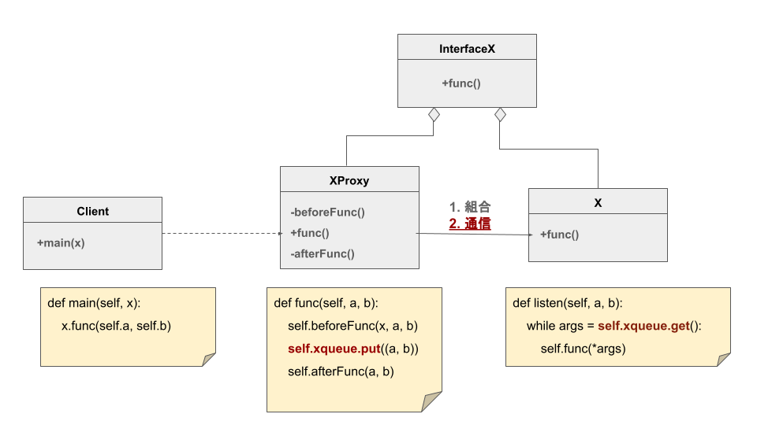

交易軟體中的設計模式 (1) 代理模式與 COM 元件

代理模式 Proxy Pattern
我們先走一遍，代理模式的結構是如何產生的
我們現在有一個 Client ，而他的 main() 會需要使用到 X 的 func() ：

由於 設計需求 (後面討論)，我們希望 Client 不要直接接觸 X
例如， X 可能還有很多其他函數： unsafeFunc1 , unsafeFunc2 , unsafeFunc3
但我們不希望 Client 碰到，所以我們先定義一個介面，這個介面只有 func() ：

接著我們依照介面實作 NewX 作為 Client 互動對象，並且只有 func() 可用：

你還可以在 func() 前後做些準備，讓調用 func() 之前與之後做好充足準備
例如透過 beforeFunc() 檢查傳入的東西是否合法， func() 是否可以執行
或是透過 afterFunc() 把結果做些處理，再返回給 Client
你也可以把 X 的 func() code 抄過來，讓 Client 與整個 X 解耦
然而事情可能沒有那麼簡單， func() 高度依賴 X 內部的屬性與方法
那你就必須讓 NewX 持有 (has-a) X ，那這就是最經典的 組合代理模式 ：

這時候 NewX 就是 XProxy ，並持有 X ，透過 self.x.func() 調用
有時候，你可能無法持有 X ，例如 X 在另一個進程、在另一個電腦
那你就需要在 XProxy 與 X 之間建立通信，考慮 通信代理模式
這邊先最簡單的多進程共享 Queue 舉例
假設 X 在另一個進程中，初始化設置好與 XProxy 共享一個 xqueue ：

所以你可以在 XProxy 中透過往 xqueue 放入 args (a, b)
並讓 X 透過對 xqueue 的監聽，取出後執行 func() ，達成代理的功能
交易軟體中的設計需求：COM 元件的生命週期
如果券商提供的 API 是透過 COM 元件連線，有時候連線中斷後，你可能要重新連線
然而 COM 元件內部他怎麼紀錄使用狀態你不知道，就可能造成重新連線並沒有把狀態全部重置
而我們執行的 COM 元件，可能也要重啟 Event loop，然後重新 coInitialize1
由於無法確保獲信賴第三方套件，最安全的做法就法就是讓 COM 元件跑在另一個進程 2
如果券商 API 執行在另一個進程，那就像是前面的 X 一樣
我們在主進程中，就得透過 XProxy 來使用 API，並且可以監控 X 的狀況
而在 API 出問題時，可以透過 XProxy 直接把進程殺死並重啟，確保環境狀態完整重置
當然，這些都是有附加的代價，設計永遠都是各種權衡
關於代理模式的優缺點網路上有很多文章，大家需要根據自己的需求自己選擇
Footnotes
1 在 Python 中，得透過 comtypes.CoInitialize 初始化環境，包含確保線程安全、管理生命週期
2 相比之下，多數 DB 的 Client 端是開源的且封裝良好，需要使用到的設計模式是 repository pattern